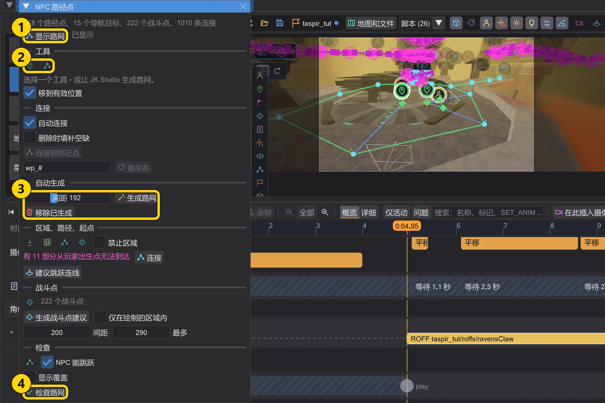
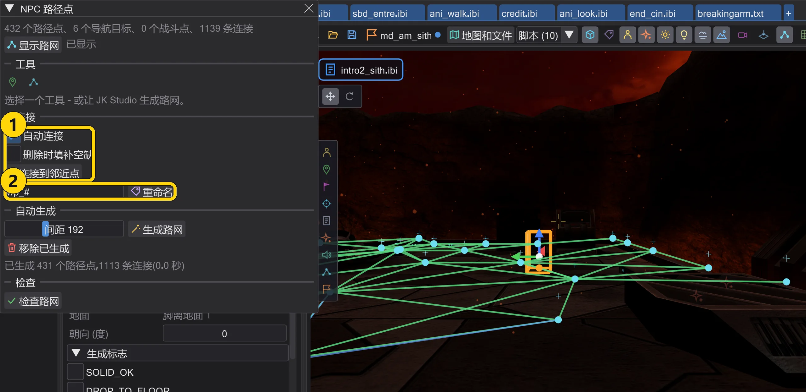
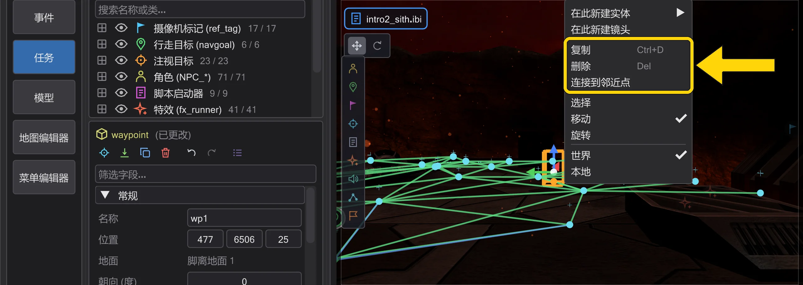
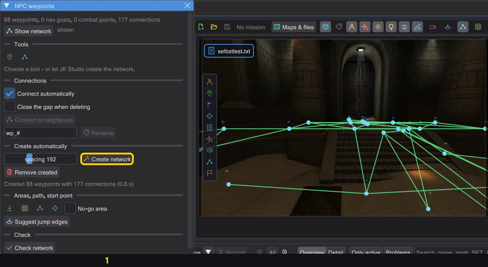
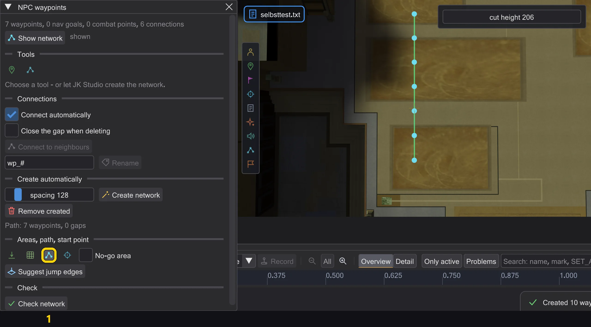
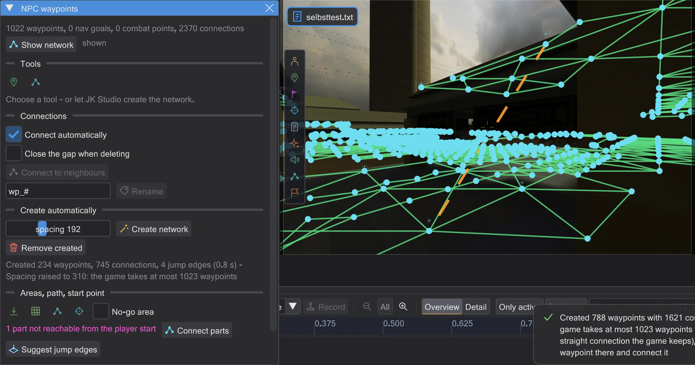
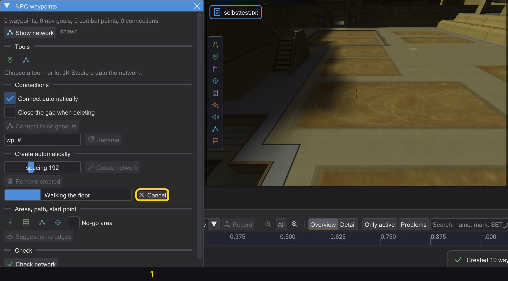

地图与场景
NPC 路径点
NPC 行走所用的路网——在过场中前往远处的行走目标,以及追击或逃跑时。可以手动放置,也可以让程序自动生成,然后进行检查。

| 编号 | 名称 | 作用 |
|---|---|---|
| 1 | 显示路网 | 在地图上显示路网。 |
| 2 | 放置路径点 / 连接 | 单击地面放置路径点 / 连接两个点。 |
| 3 | 生成路网 / 移除已生成 | 在可行走的地面上铺设路网 / 删除已生成的内容。 |
| 4 | 检查路网 | 查找游戏会拒绝的问题;单击某个问题即可飞到那里。 |
通过地图工具栏中的 NPC 路径点 打开。显示路网 绘制路径:绿色为手动设置(target),蓝色为自动(导航点和战斗点),橙色为跳跃(targetJump)。
- 放置路径点:单击地面——每个新点都会与上一个相连。Shift+单击开始新路径,Esc 结束。
- 连接:单击两个点将其连接(Ctrl:跳跃连接);单击两个已连接的点会断开。每个点最多四个连接。
- 生成路网 在可行走的地面上分布路径点(间距:原版关卡约 230)并连接——可一步撤销。移除已生成 只删除这些点,手动放置的保留。
- 检查路网 找出游戏会拒绝或 NPC 无法使用的部分;单击某个问题即可飞过去。
删除、自动连接、复制#

| 编号 | 名称 | 作用 |
|---|---|---|
| 1 | 自动连接 / 删除时填补空缺 / 连接到邻近点 | 像游戏一样连接——自动、删除时或针对所选内容。 |
| 2 | 重命名 | 按模式重命名选中的路径点。 |
- 删除(Delete、检查器中的按钮或右键菜单中的 删除)会同时移除所有指向被删路径点的
target到targetJump——在同一个撤销步骤中。如果指向的是其他实体,程序会先询问。启用 删除时填补空缺 后,被删路径点的相邻点会在游戏连线检查允许的地方彼此相连。 - 自动连接(默认开启):你放置、移动或复制的路径点会与 间距 范围内游戏同样会连接的路径点相连——使用游戏自身的连线检查(NAV::TestEdge,Jedi Outcast 中为 HardConnect),最近的优先,每个点最多四个
target字段。移动后,游戏会丢弃的连接将被移除;全部在一个撤销步骤中。连接到邻近点 对所选内容执行相同操作。导航点和战斗点不参与:游戏会自行连接它们。 - 对多个路径点执行 复制(Ctrl+D 或右键菜单):副本获得空闲名称并保持彼此相连,与外部的连接保持不变;随后它们会与新的相邻点相连。重命名 旁边的输入框按模式重命名选中的路径点(
#变为数字);所有指向它们的target会一起更新。 - 生成路网 也会从地图上已有的路径点开始:在生成时遗漏的房间里放一个路径点,再生成一次——该房间就会得到自己的路网,并与你的路径点相连。

生成:房间、楼梯、门#

| 编号 | 名称 | 作用 |
|---|---|---|
| 1 | 生成路网 | 在 NPC 能走到的所有地面上分布路径点。 |
- 生成路网 会像游戏中的 NPC 一样,从玩家出生点、角色、导航目标和地图上的路径点出发行走:每步 15 单位(NPC 一帧奔跑的距离),上下台阶最高 18(
STEPSIZE),地面坡度不超过游戏允许的范围(MIN_WALK_NORMAL),并使用游戏的碰撞——Clip 画刷会阻挡,没有碰撞的装饰不会。因此它能到达角色可以走进的每个房间,即使要穿过窄门。 - 路径点会放在 间距 的网格上、每段高于一级台阶的楼梯和坡道的顶部与底部,以及网格会留下超过一个间距空缺的地方——门口和小房间。坡道的斜面上也会有路径点。
- 只有当角色能沿直线走过、并且游戏自身的连线检查(NAV::TestEdge,Jedi Outcast 中为 HardConnect)在两个方向上都保留时,连接才会保留。门视为打开,就像游戏构建路网时会打开挡路的门;NPC 能否通过在游戏进行时决定,与游戏一致。
- 游戏最多接受 1023 个路径点。如果网格需要更多,间距会增大(最多为 间距 的三倍),并在消息中说明。只能跳上去的屋顶和平台在行走时不会得到路径点;用 起点 在那里点击(见下文)。
区域、路径、起点、跳跃连线#

| 编号 | 名称 | 作用 |
|---|---|---|
| 1 | 画笔 套索 路径 起点 | 绘制区域(画笔、套索)、画路径、点击起点。 |
| 2 | 禁止区域 | 下一个绘制的区域是禁止区域。 |
| 3 | 在此生成 | 只在此区域内生成,使用其自己的间距。 |
- 画笔 和 套索 按住鼠标左键在地面上绘制——在 3D 视图或俯视图中。在此生成 像 NPC 一样只在区域内行走,在还没有路径点的地方按该区域的间距放置路径点;它们通过游戏的连线检查与周围的路径点相连,与手动放置时相同。一步撤销。区域会为该地图保存(在设置文件夹中,而不是在 .bsp 中),下次打开时会恢复。
- 勾选 禁止区域 后,下一个区域是禁止区域(红色):生成、路径和起点永远不会在那里放置路径点。周围的点仍会在游戏连线检查通过的地方跨过它相连。

- 路径:在地面上画一条线。沿线每隔 间距 生成路径点,像生成时一样放在地面上;在游戏连线检查双向保留连线的地方连接相邻点。未通过或游戏不会保留路径点的地方会用红色叉号标出,消息会给出第一处的位置。路径会与周围的路径点相连。一步撤销。
- 起点:点击生成未到达的地面——屋顶、壁架、落差后面的房间。从那里它像 NPC 一样继续行走,在路网尚未覆盖的地面上放置路径点并连接它们:如果角色能走过去就步行连接,否则使用跳跃连线(见下文)。一步撤销。

- 跳跃连线就是
targetJump。游戏只会在这种连线上跳跃,载入地图时不检查它,并且只让会跳跃的 NPC 使用(原力跳跃,或本身会跳的职业)。建议跳跃连线(在起点和 连接 之后也会执行)只在路网中彼此不相连的部分之间写入,并且只在 NPC 在游戏中确实能双向完成跳跃的地方——使用游戏跳跃前的同一检查(NPC_TryJump、NPC_Jump):距离最多 750,向下最多 450,目标下方有地面,且 NPC 的碰撞盒能通过弧线。每个路径点有一个targetJump字段。Jedi Outcast 没有跳跃连线。 - 从玩家出生点经路网无法到达的路径点以紫色绘制,窗口会统计这些部分的数量。连接 从每个这样的部分走向路网(如同在那里设起点,范围为其周围两个间距)并连接它——步行,否则用跳跃连线。

- 在大地图上生成需要几秒钟。它在后台运行:窗口显示进度和步骤,你可以继续环顾四周或在其他窗口中工作。结果在最后以一个撤销步骤出现——与直接计算得到的路网相同。如果期间实体发生变化,结果会被丢弃并给出消息;取消 会停止它且不做任何更改。
过场预览会像游戏一样使用此网络来行走:远处的目标需要在这里有路径,否则角色会站着不动(角色如何移动——与游戏一致)。一个网络至少需要四个路径点。网络上的门在打开时才算数;关闭的门只有在会为 NPC 自动打开时才算。